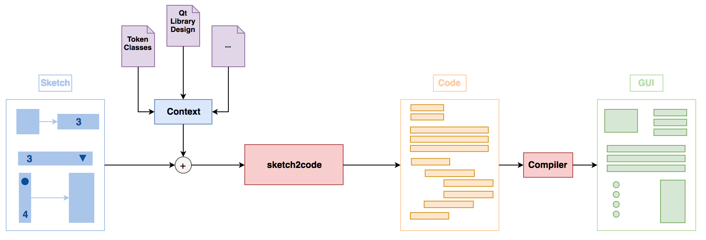

Sketch To Code
Automatically generating code from hand-drawn sketches

Generating code from images, and in particular sketches, has
recently emerged as an exciting research area in machine learning
and software engineering.
We present sketch2code, a framework that automatically
generates code from pictures of hand-drawn sketches. In addition to
shipping with built-in libraries, sketch2code also supports the addition
of user-defined libraries and sketch symbols, which allows it to have a
much wider range of applications than that of current systems.
We achieve this goal by intelligently parsing the input sketch
and then deterministically mapping the detected contents to a target
library of the user’s choice.
Results
To demonstrate the capabilities of our framework, we implement two target
libraries, one for Qt and one for Alice 3.
In the images below, the left
image represents the hand-drawn sketch, and the right image corresponds
to the compiled code that sketch2code spits out.